Nitrous acid (HNO2 or HONO) reacts with aliphatic amines in a fashion that provides a useful test for distinguishing primary, secondary and tertiary amines.
Nitrous acid is a Brønsted acid of moderate strength (pKa = 3.3). Because it is unstable, it is prepared immediately before use in the following manner:
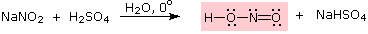
Under the acidic conditions of this reaction, all amines undergo reversible salt formation:
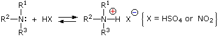
This happens with 3º-amines, and the salts are usually soluble in water. The reactions of nitrous acid with 1°- and 2°- aliphatic amines may be explained by considering their behavior with the nitrosonium cation, NO(+), an electrophilic species present in acidic nitrous acid solutions.
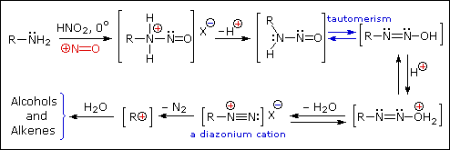
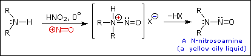
The distinct behavior of 1º, 2º & 3º-aliphatic amines is an instructive challenge to our understanding of their chemistry, but is of little importance as a synthetic tool. The SN1 product mixtures from 1º-amines are difficult to control, and rearrangement is common when branched primary alkyl groups are involved. The N-nitrosamines formed from 2º-amines are carcinogenic, and are not generally useful as intermediates for subsequent reactions.
Nitrous acid reactions of 1º-aryl amines generate relatively stable diazonium species that serve as intermediates for a variety of aromatic substitution reactions. Diazonium cations may be described by resonance contributors, as in the bracketed formulas shown below. The left-hand contributor is dominant because it has greater bonding. Loss of nitrogen is slower than in aliphatic 1º-amines because the C-N bond is stronger, and aryl carbocations are comparatively unstable.
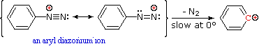
Aqueous solutions of these diazonium ions have sufficient stability at 0º to 10 ºC that they may be used as intermediates in a variety of nucleophilic substitution reactions. For example, if water is the only nucleophile available for reaction, phenols are formed in good yield.
2º-Aryl Amines:
2º-Aryl amines give N-nitrosamine derivatives on reaction with nitrous acid, and thus behave identically to their aliphatic counterparts.
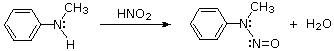
3º-Aryl Amines:
Depending on ring substitution, 3º-Aryl amines may undergo aromatic ring nitrosation at sites ortho or para to the amine substituent. The nitrosonium cation is not sufficiently electrophilic to react with benzene itself, or even toluene, but highly activated aromatic rings such as amines and phenols are capable of substitution. Of course, the rate of reaction of NO(+) directly at nitrogen is greater than that of ring substitution, as shown in the previous example. Once nitrosated, the activating character of the amine nitrogen is greatly diminished; and N-nitrosoaniline derivatives, or indeed any amide derivatives, do not undergo ring nitrosation.
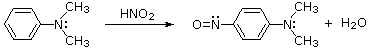
Aryl diazonium salts are important intermediates. They are prepared in cold (0 º to 10 ºC) aqueous solution, and generally react with nucleophiles with loss of nitrogen. Some of the more commonly used substitution reactions are shown in the following diagram. Since the leaving group (N2) is thermodynamically very stable, these reactions are energetically favored. Those substitution reactions that are catalyzed by cuprous salts are known as Sandmeyer reactions. Fluoride substitution occurs on treatment with BF4(–), a reaction known as the Schiemann reaction. Stable diazonium tetrafluoroborate salts may be isolated, and on heating these lose nitrogen to give an arylfluoride product. The top reaction with hypophosphorus acid, H3PO2, is noteworthy because it achieves the reductive removal of an amino (or nitro) group. Unlike the nucleophilic substitution reactions, this reduction probably proceeds by a radical mechanism.
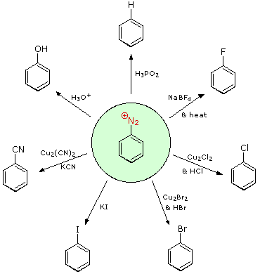
These aryl diazonium substitution reactions significantly expand the tactics available for the synthesis of polysubstituted benzene derivatives. Consider the following options:
(i) The usual precursor to an aryl amine is the corresponding nitro compound. A nitro substituent deactivates an aromatic ring and directs electrophilic substitution to meta locations. (ii) Reduction of a nitro group to an amine may be achieved in several ways. The resulting amine substituent strongly activates an aromatic ring and directs electrophilic substitution to ortho & para locations. (iii) The activating character of an amine substituent may be attenuated by formation of an amide derivative (reversible), or even changed to deactivating and meta-directing by formation of a quaternary-ammonium salt (irreversible). (iv) Conversion of an aryl amine to a diazonium ion intermediate allows it to be replaced by a variety of different groups (including hydrogen), which may in turn be used in subsequent reactions.
The following examples illustrate some combined applications of these options to specific cases. You should try to conceive a plausible reaction sequence for each. Once you have done so, you may check suggested answers by clicking on the question mark for each.
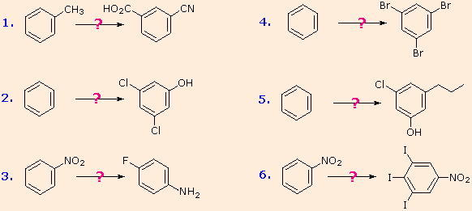
A resonance description of diazonium ions shows that the positive charge is delocalized over the two nitrogen atoms. It is not possible for nucleophiles to bond to the inner nitrogen, but bonding (or coupling) of negative nucleophiles to the terminal nitrogen gives neutral azo compounds. As shown in the following equation, this coupling to the terminal nitrogen should be relatively fast and reversible. The azo products may exist as E / Z stereoisomers. In practice it is found that the E-isomer predominates at equilibrium.
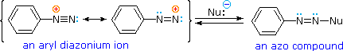
Unless these azo products are trapped or stabilized in some manner, reversal to the diazonium ion and slow nucleophilic substitution at carbon (with irreversible nitrogen loss) will be the ultimate course of reaction, as described in the previous section. For example, if phenyldiazonium bisufate is added rapidly to a cold solution of sodium hydroxide a relatively stable solution of sodium phenyldiazoate (the conjugate base of the initially formed diazoic acid) is obtained. Lowering the pH of this solution regenerates phenyldiazoic acid (pKa ca. 7), which disassociates back to the diazonium ion and eventually undergoes substitution, generating phenol.
Aryl diazonium salts may be reduced to the corresponding hydrazines by mild reducing agents such as sodium bisulfite, stannous chloride or zinc dust. The bisulfite reduction may proceed by an initial sulfur-nitrogen coupling, as shown in the following equation.
The most important application of diazo coupling reactions is electrophilic aromatic substitution of activated benzene derivatives by diazonium electrophiles. The products of such reactions are highly colored aromatic azo compounds that find use as synthetic dyestuffs, commonly referred to as azo dyes. Azobenzene (Y=Z=H) is light orange; however, the color of other azo compounds may range from red to deep blue depending on the nature of the aromatic rings and the substituents they carry. Azo compounds may exist as cis/trans isomer pairs, but most of the well-characterized and stable compounds are trans.
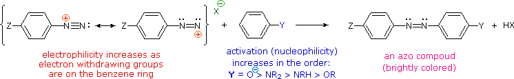
Some examples of azo coupling reactions are shown below. A few simple rules are helpful in predicting the course of such reactions: (i) At acid pH (< 6) an amino group is a stronger activating substituent than a hydroxyl group (i.e. a phenol). At alkaline pH (> 7.5) phenolic functions are stronger activators, due to increased phenoxide base concentration. (ii) Coupling to an activated benzene ring occurs preferentially para to the activating group if that location is free. Otherwise ortho-coupling will occur. (iii) Naphthalene normally undergoes electrophilic substitution at an alpha-location more rapidly than at beta-sites; however, ortho-coupling is preferred. See the diagram for examples of α / β notation in naphthalenes.
You should try to conceive a plausible product structure for each of the following couplings. Once you have done so, you may check your answers by clicking on the question mark for each.
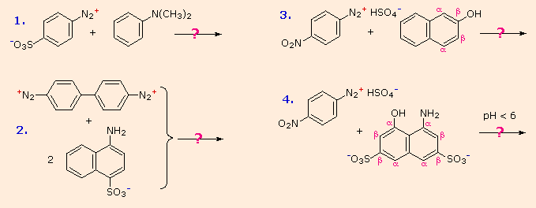
Amine functions seldom serve as leaving groups in nucleophilic substitution or base-catalyzed elimination reactions. Indeed, they are even less effective in this role than are hydroxyl and alkoxyl groups. In the case of alcohols and ethers, a useful technique for enhancing the reactivity of the oxygen function was to modify the leaving group (OH(–) or OR(–)) to improve its stability as an anion (or equivalent). This stability is conveniently estimated from the strength of the corresponding conjugate acids. As noted earlier, 1º and 2º-amines are much weaker acids than alcohols, so it is not surprising that it is difficult to force the nitrogen function to assume the role of a nucleophilic leaving group. For example, heating an amine with HBr or HI does not normally convert it to the corresponding alkyl halide, as in the case of alcohols and ethers. In this context we note that the acidity of the putative ammonium leaving group is at least ten powers of ten less than that of an analogous oxonium species. The loss of nitrogen from diazonium intermediates is a notable exception in this comparison, due to the extreme stability of this leaving group (the conjugate acid of N2 would be an extraordinarily strong acid).
One group of amine derivatives that have proven useful in SN2 and E2 reactions is that composed of the tetraalkyl (4º-) ammonium salts. Most applications involving this class of compounds are eliminations, but a few examples of SN2 substitution have been reported.
Elimination reactions of 4º-ammonium salts are termed Hofmann eliminations. Since the counter anion in most 4º-ammonium salts is halide, this is often replaced by the more basic hydroxide ion through reaction with silver hydroxide (or silver oxide). The resulting hydroxide salt must then be heated (100 - 200 ºC) to effect the E2-like elimination of a 3º-amine. Example #1 below shows a typical Hofmann elimination. Obviously, for an elimination to occur one of the alkyl substituents on nitrogen must have one or more beta-hydrogens, as noted earlier in examining elimination reactions of alkyl halides.
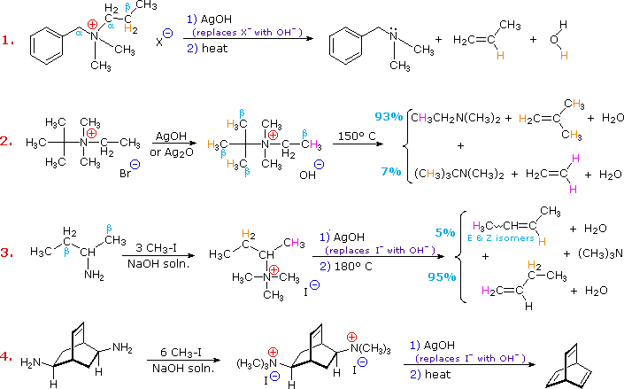
In example #2 above, two of the alkyl substituents on nitrogen have beta-hydrogens, all of which are on methyl groups (colored orange & magenta). The chief product from the elimination is the alkene having the more highly substituted double bond, reflecting not only the 3:1 numerical advantage of those beta-hydrogens, but also the greater stability of the double bond. Example #3 illustrates two important features of the Hofmann elimination: First, simple amines are easily converted to the necessary 4º-ammonium salts by exhaustive alkylation, usually with methyl iodide (methyl has no beta-hydrogens and cannot compete in the elimination reaction). Exhaustive methylation is shown again in example #4. Second, when a given alkyl group has two different sets of beta-hydrogens available to the elimination process (colored orange & magenta here), the major product is often the alkene isomer having the less substituted double bond. The tendency of Hofmann eliminations to give the less-substituted double bond isomer is commonly referred to as the Hofmann Rule, and contrasts strikingly with the Zaitsev Rule formulated for dehydrohalogenations and dehydrations. In cases where other activating groups, such as phenyl or carbonyl, are present, the Hofmann Rule may not apply. Thus, if 2-amino-1-phenylpropane is treated in the manner of example #3, the product consists largely of 1-phenylpropene (E & Z-isomers).
To understand why the base-induced elimination of 4º-ammonium salts behaves differently from that of alkyl halides it is necessary to reexamine the nature of the E2 transition state, first described for dehydrohalogenation. The energy diagram shown earlier for a single-step bimolecular E2 mechanism is repeated on the right. The E2 transition state is less well defined than is that of SN2 reactions. More bonds are being broken and formed, with the possibility of a continuum of states in which the extent of C–H and C–X bond-breaking and C=C bond-making varies. For example, if the bond to the leaving group (X) is substantially broken relative to the other bond changes, the transition state approaches that for an E1 reaction (initial ionization followed by a fast second step). At the other extreme, if the acidity of the beta-hydrogens is enhanced, then substantial breaking of C–H may occur before the other bonds begin to be affected. For most simple alkyl halides it was proper to envision a balanced transition state, in which there was a synchronous change in all the bonds. Such a model was consistent with the Zaitsev Rule. When the leaving group X carries a positive charge, as do the 4º-ammonium compounds discussed here, the inductive influence of this charge will increase the acidity of both the alpha and the beta-hydrogens. Furthermore, the 4º-ammonium substituent is much larger than a halide or hydroxyl group and may perturb the conformations available to substituted beta-carbons. It seems that a combination of these factors acts to favor base attack at the least substituted (least hindered and most acidic) set of beta-hydrogens. The favored anti orientation of the leaving group and beta-hydrogen, noted for dehydrohalogenation, is found for many Hofmann eliminations; but syn-elimination is also common, possibly because the attraction of opposite charges orients the hydroxide base near the 4º-ammonium leaving group.
Three additional examples of the Hofmann elimination are shown in the following diagram. Example #1 is interesting in two respects. First, it generates a 4º-ammonium halide salt in a manner different from exhaustive methylation. Second, this salt is not converted to its hydroxide analog prior to elimination. A concentrated aqueous solution of the halide salt is simply dropped into a refluxing sodium hydroxide solution, and the volatile hydrocarbon product is isolated by distillation.
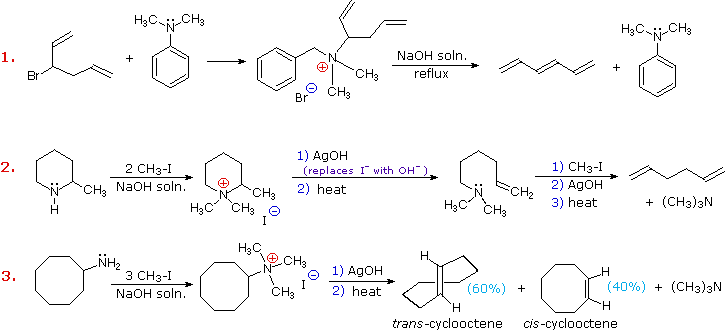
Example #2 illustrates an important aspect of the Hofmann elimination. If the nitrogen atom is part of a ring, then a single application of this elimination procedure does not remove the nitrogen as a separate 3º-amine product. In order to sever the nitrogen function from the molecule, a second Hofmann elimination must be carried out. Indeed, if the nitrogen atom was a member of two rings (fused or spiro), then three repetitions of the Hofmann elimination would be required to sever the nitrogen from the remaining molecular framework. Example #3 is noteworthy because the less stable trans-cyclooctene is the chief product, accompanied by the cis-isomer. An anti-E2-transition state would necessarily give the cis-cycloalkene, so the trans-isomer must be generated by a syn-elimination. The cis-cyclooctene produced in this reaction could also be formed by a syn-elimination. Cyclooctane is a conformationally complex structure. Several puckered conformations that avoid angle strain are possible, and one of the most stable of these is shown on the right. Some eclipsed bonds occur in all these conformers, and transannular hydrogen crowding is unavoidable. Since the trimethylammonium substituent is large (about the size of tert-butyl) it will probably assume an equatorial-like orientation to avoid steric crowding. An anti-E2 transition state is likely to require an axial-like orientation of this bulky group, making this an unfavorable path.
In comparing the chemistry of the amines with alcohols and ethers, we discover many classes of related compounds in which nitrogen assumes higher oxidation states, in contrast to limited oxidation states of oxygen. In this context, keep in mind that the oxidation state of elemental oxygen (O2) and nitrogen (N2) is defined as zero. The most prevalent state of covalently bonded oxygen is -2. This is the case for water, alcohols, ethers and carbonyl compounds. The only common higher oxidation state (-1) is found in the peroxides, R–O–O–R, where R=hydrogen, alkyl, aryl or acyl. Because of the low covalent bond energy of the peroxide bond (ca.35 kcal/mole), these compounds are widely used as free radical initiators, and are sometimes dangerously explosive in their reactivity (e.g. triacetone triperoxide used by terrorist bombers). Nitrogen compounds, on the other hand, encompass oxidation states of nitrogen ranging from -3, as in ammonia and amines, to +5, as in nitric acid. The following table lists some of the known organic compounds of nitrogen, having different oxidation states of that element. Some of these classes of compounds have been described; others will be discussed later.
Oxidation State
_3
_2
_1
0
+1
+3
Amine oxides are prepared by oxidizing 3º-amines or pyridines with hydrogen peroxide or peracids (e.g. ZOOH, where Z=H or acyl).
An elimination reaction, complementary to the Hofmann elimination, occurs when 3º-amine oxides are heated at temperatures of 150 to 200 ºC. This reaction is known as the Cope Elimination. It is commonly carried out by dropwise addition of an amine oxide solution to a heated tube packed with small glass beads. A stream of nitrogen gas flowing through the column carries the volatile alkene products to a chilled receiver. The nitrogen-containing product is a hydroxyl amine. Unlike the Hofmann elimination, this reaction takes place by a concerted cyclic reorganization, as shown in the following diagram. For such a mechanism, the beta-hydrogen and amine oxide moieties necessarily have a syn-relationship.
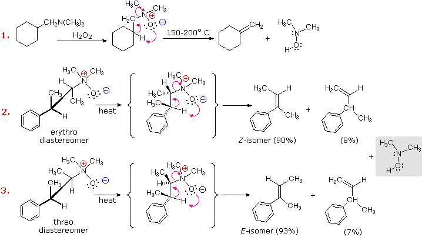
Cope elimination of diastereomeric amine oxides, such as those shown in examples #2 & 3 above, provide proof of the syn-relationship of the beta-hydrogen and amine oxide groups. These examples also demonstrate a strong regioselectivity favoring the more stable double bond.
Pyrolytic syn-Eliminations Amine oxides are not the only functions that undergo a unimolecular syn-elimination on heating. To see examples of other cases Click Here
2º-Amines lacking α-hydrogens are oxidized by peroxides (ZOOH) to nitroxide radicals of surprising stability. In the example shown at the top of the following diagram it should be noted that resonance delocalization of the unpaired electron contributes to a polar N–O bond. The R=H compound, known by the acronym TEMPO, is a relatively stable red solid. Many other nitroxides have been prepared, three of which are drawn at the lower right. If one or more hydrogens are present on an adjacent carbon, the nitroxide decomposes to mixtures including amine oxides and nitrones, as shown at the lower left. Nitroxides are oxidized to unstable oxammonium cations by halogens.
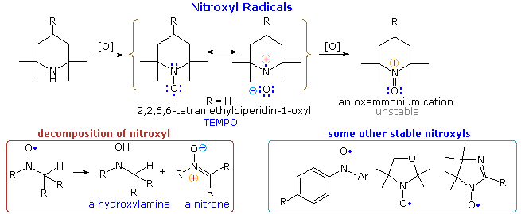
The following problems review several aspects of amine chemistry. The first demonstrates the use of chemical tests, such as the Hinsberg test, for distinguishing 1º, 2º & 3º-amines. The second asks you to draw the product of a reaction selected from 54 possible combinations of amines and reagents. The third explores the consequences of repetitive Hofmann eliminations, and the last problem demonstrates the importance of aryl amine reactions in synthesis.
Choose a Problem Chemical Tests Reactions of Amines Hofmann Eliminations Nitrobenzene in Synthesis
Phosphorous Analogs of Amines Phosphorus is beneath nitrogen in the periodic table. To see examples of organophosphorus compounds and their chemistry Click Here
This page is the property of The Edvibe Team. Comments, questions and errors should be sent to contact@edvibe.co.ke. These pages are provided to the IOCD to assist in capacity building in chemical education. 05/05/2013